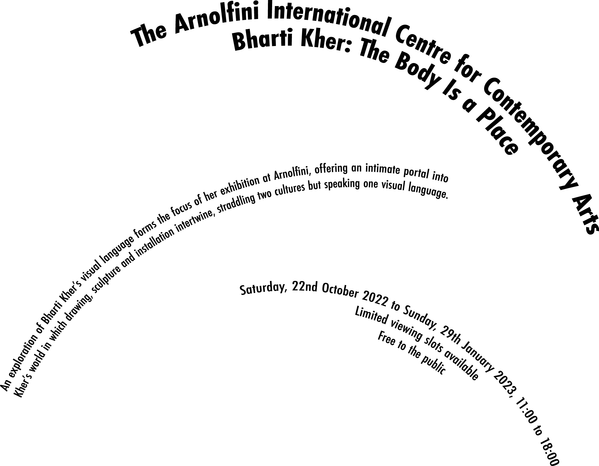
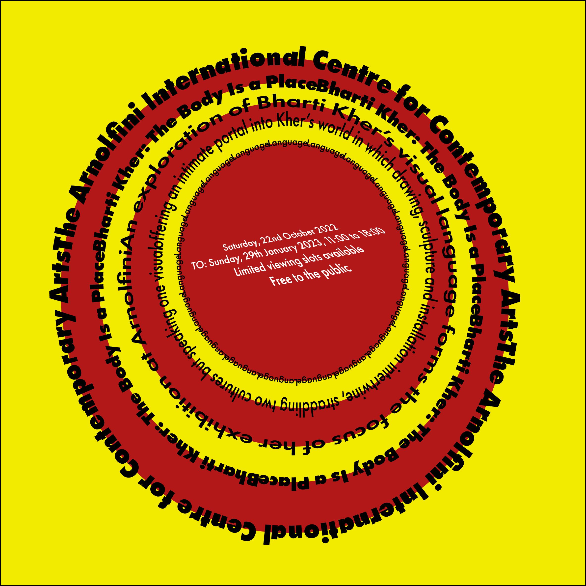
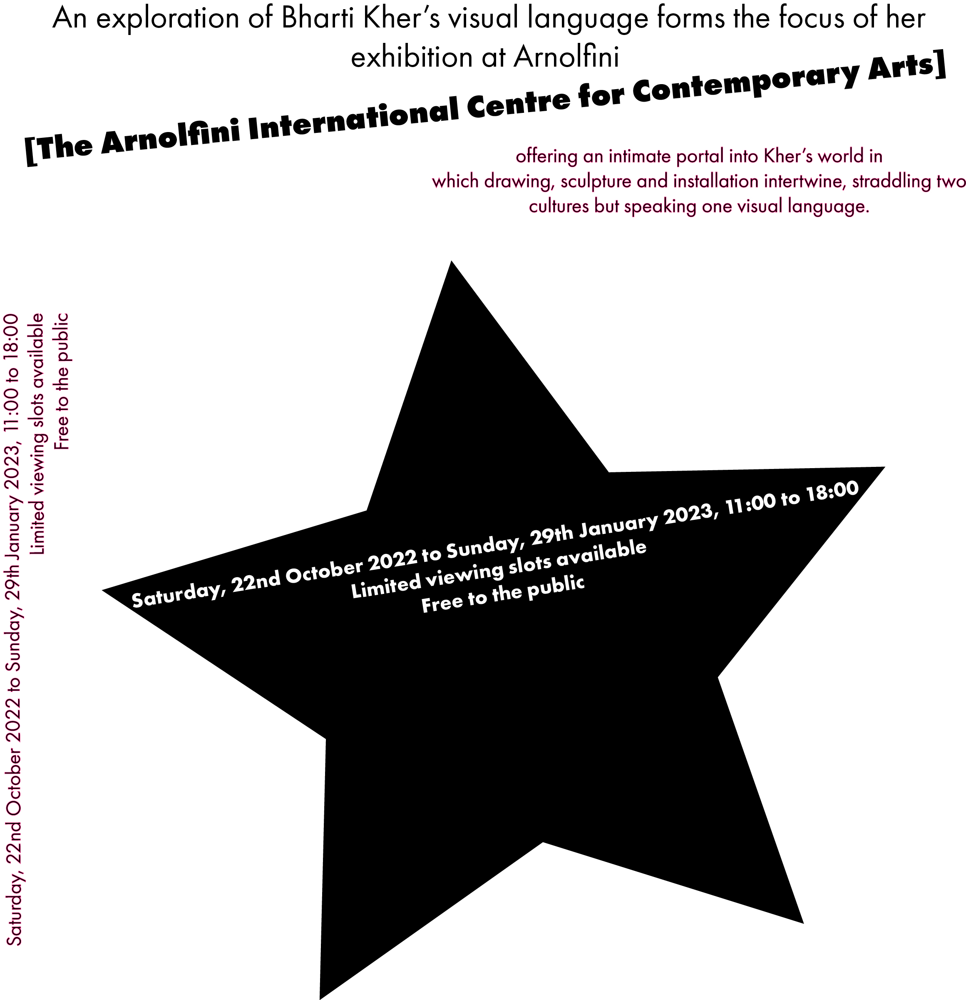
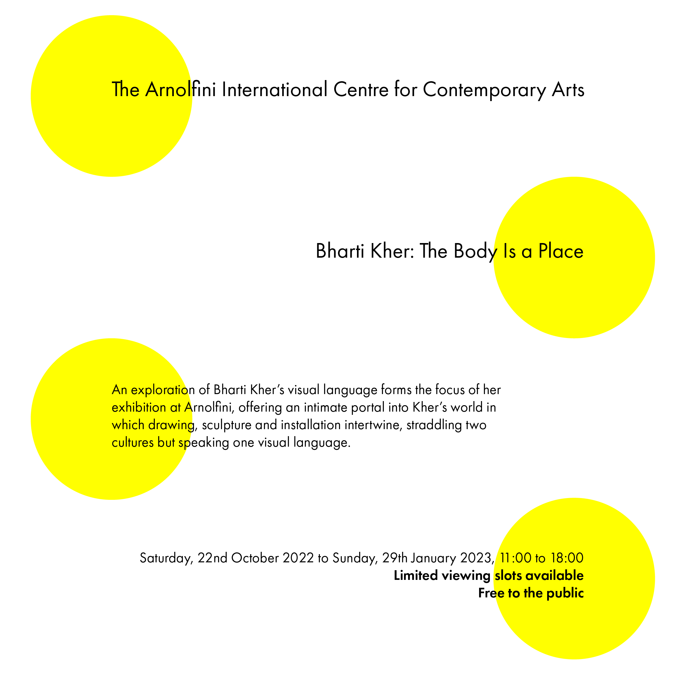
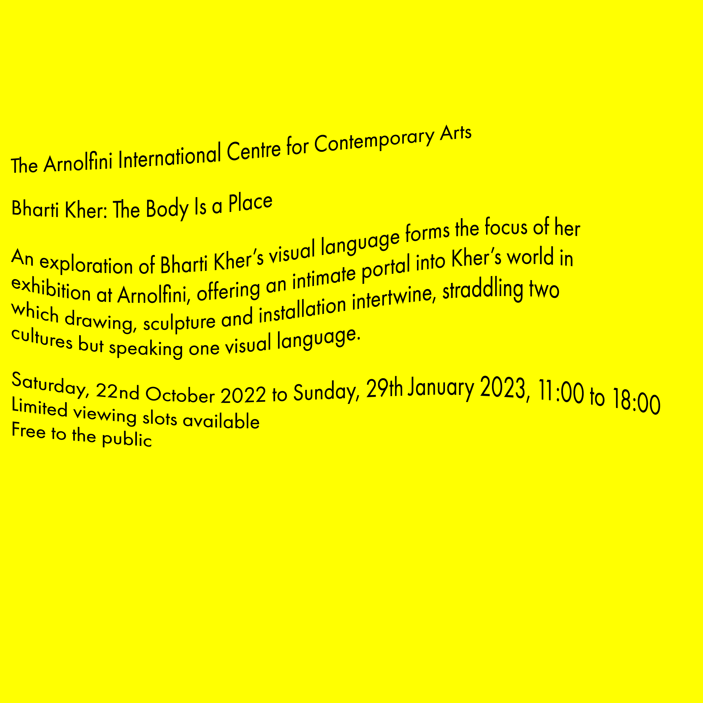
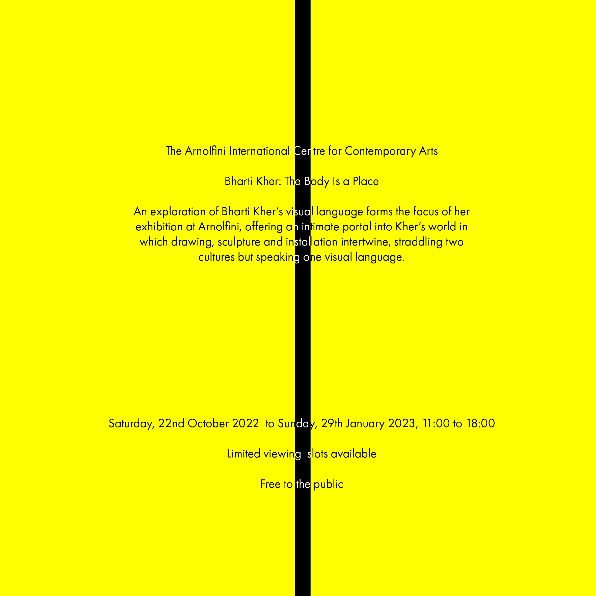

Welcome to my portfolio site. Please take a few moments to browse through my work.
This page showcases my Typography work
Here is my example of Axial Typography. I've expressed an extreme emphasis on the limited avaliablity of viewing slots
As I beleive this to be a viable technique to attract visitors to the event. Limited avaliability breeds urgency!
Here is my example of dilatational Typography. In this approach I've decided to emphasise the venue over viewing slots

Here is my example of radial Typography. I've used contrasting colour schemes and skewed images to create an eye-catching effect
Here is my example of random Typography. I've used a range of Font parameters and organisation to create a random effect while using contrast and bold font's to emphasise key information

Here is my example of grid Typography. I've used contrast and a grid format to create easy readability and an aesthetically pleasing outcome

Here is my example of Modular Typography. I've used contrasting colours and similarity. I've also used a variety of font sizes and boldness to emphasis key info.

Here is my example of Transitional Typography. I've used contrasting colours Wavy text.

Here is my example of Bilateral Typography. I've used contrasting colours and symettry to provide an easy to read yet eye-catching outcome.
